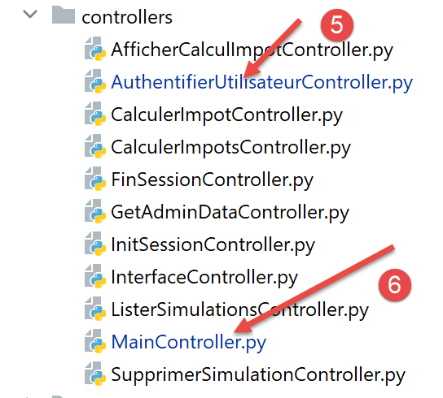
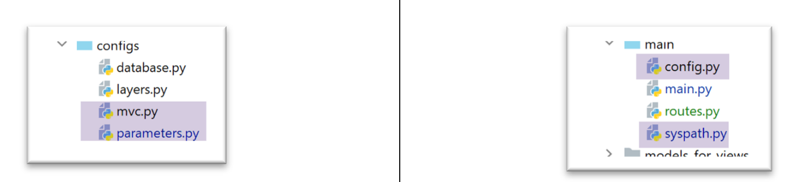

33. تمرين تطبيقي: الإصدار 13
يُعدّل الإصدار 13 الإصدار 12 في النقاط التالية:
- إعادة هيكلة أجزاء معينة من الكود (إعادة البرمجة)؛
- تتم إدارة الجلسة بطريقة مختلفة باستخدام الوحدة النمطية [flask_session]؛
- استخدام كلمات مرور مشفرة في ملف التكوين؛
يتم الحصول على الإصدار 13 مبدئيًا عن طريق نسخ الإصدار 12:


- في [1]، سيتم إعادة هيكلة التكوين. يتم إخراجه على وجه الخصوص من المجلد [flask]؛
- في [2]، سيتم إعادة هيكلة البرنامج النصي الرئيسي. كما يتم إخراجه من المجلد [flask]؛
- في [3]، سيتم تقسيم التكوين إلى عدة ملفات؛
- في [4]: سيتم تبسيط البرنامج النصي الرئيسي [main] عن طريق نقل جزء من الكود إلى ملفات أخرى؛
- في [5]، سيتم تعديل وحدة التحكم في المصادقة حيث سيتم الآن تشفير كلمات مرور المستخدمين؛
- في [6]، سيقوم وحدة التحكم الرئيسية بدمج الكود الذي كان موجودًا سابقًا في البرنامج النصي الرئيسي [main]؛
33.1. إعادة هيكلة تكوين التطبيق

تظهر ثلاثة ملفات تكوين جديدة:
- [mvc]: لتكوين بنية التطبيق MVC؛
- [parameters]: الذي سيجمع جميع الثوابت الخاصة بالتطبيق؛
- [syspath]: الذي يقوم بتكوين مسار Python للتطبيق؛
الملف [syspath.py] هو كما يلي:
def configure(config: dict) -> dict:
import os
# مجلد هذا الملف
script_dir = os.path.dirname(os.path.abspath(__file__))
# المسار الجذري
root_dir = "C:/Data/st-2020/dev/python/cours-2020/python3-flask-2020"
# التبعيات
absolute_dependencies = [
# مجلدات المشروع
# BaseEntity، MyException
f"{root_dir}/classes/02/entities",
# InterfaceImpôtsDao، InterfaceImpôtsMétier، InterfaceImpôtsUi
f"{root_dir}/impots/v04/interfaces",
# AbstractImpôtsdao, ImpôtsConsole، ImpôtsMétier
f"{root_dir}/impots/v04/services",
# ImpotsDaoWithAdminDataInDatabase
f"{root_dir}/impots/v05/services",
# AdminData، ImpôtsError، TaxPayer
f"{root_dir}/impots/v04/entities",
# الثوابت، الشرائح
f"{root_dir}/impots/v05/entities",
# مسجل، SendAdminMail
f"{root_dir}/impots/http-servers/02/utilities",
# مجلد البرنامج النصي الرئيسي
script_dir,
# التكوينات [database, layers, parameters, controllers, views]
f"{script_dir}/../configs",
# وحدات التحكم
f"{script_dir}/../controllers",
# الردود HTTP
f"{script_dir}/../responses",
# نماذج العروض
f"{script_dir}/../models_for_views",
]
# تحديد مسار النظام
from myutils import set_syspath
set_syspath(absolute_dependencies)
# تقديم التكوين
return {
"root_dir": root_dir,
"script_dir": script_dir
}
- يُستخدم البرنامج النصي [syspath] لتكوين مسار Python الخاص بالتطبيق (السطران 40-41)؛
- ويقدم معلومتين مفيدتين لبرامج النصية الأخرى الخاصة بالتكوين (السطران 45-46)؛
يقوم البرنامج النصي [mvc] بتكوين بنية MVC لتطبيق الويب jSON / XML / HTML:
def configure(config: dict) -> dict:
# تكوين التطبيق MVC
# وحدات التحكم
from AfficherCalculImpotController import AfficherCalculImpotController
from AuthentifierUtilisateurController import AuthentifierUtilisateurController
from CalculerImpotController import CalculerImpotController
from CalculerImpotsController import CalculerImpotsController
from FinSessionController import FinSessionController
from GetAdminDataController import GetAdminDataController
from InitSessionController import InitSessionController
from ListerSimulationsController import ListerSimulationsController
from MainController import MainController
from SupprimerSimulationController import SupprimerSimulationController
# الاستجابات HTTP
from HtmlResponse import HtmlResponse
from JsonResponse import JsonResponse
from XmlResponse import XmlResponse
# قوالب العروض
from ModelForAuthentificationView import ModelForAuthentificationView
from ModelForCalculImpotView import ModelForCalculImpotView
from ModelForErreursView import ModelForErreursView
from ModelForListeSimulationsView import ModelForListeSimulationsView
# الإجراءات المسموح بها وعناصر التحكم الخاصة بها
controllers = {
# تهيئة جلسة الحساب
"init-session": InitSessionController(),
# مصادقة المستخدم
"authentifier-utilisateur": AuthentifierUtilisateurController(),
# حساب الضريبة في الوضع الفردي
"calculer-impot": CalculerImpotController(),
# حساب الضريبة في الوضع الدفعي
"calculer-impots": CalculerImpotsController(),
# قائمة عمليات المحاكاة
"lister-simulations": ListerSimulationsController(),
# حذف محاكاة
"supprimer-simulation": SupprimerSimulationController(),
# إنهاء جلسة الحساب
"fin-session": FinSessionController(),
# عرض شاشة حساب الضريبة
"afficher-calcul-impot": AfficherCalculImpotController(),
# الحصول على البيانات من مصلحة الضرائب
"get-admindata": GetAdminDataController(),
# وحدة التحكم الرئيسية
"main-controller": MainController()
}
# أنواع الردود المختلفة (json، xml، html)
responses = {
"json": JsonResponse(),
"html": HtmlResponse(),
"xml": XmlResponse()
}
# تعتمد طرق العرض HTML ونماذجها على الحالة التي يعرضها وحدة التحكم
views = [
{
# طريقة عرض المصادقة
"états": [
700, # /init-session - نجاح
201, # /توثيق-المستخدم - فشل
],
"view_name": "views/vue-authentification.html",
"model_for_view": ModelForAuthentificationView()
},
{
# عرض حساب الضريبة
"états": [
200, # /توثيق-المستخدم نجاح
300, # /حساب-الضريبة نجاح
301, # /حساب-الضريبة فشل
800, # /عرض-حساب-الضريبة نجاح
],
"view_name": "views/vue-calcul-impot.html",
"model_for_view": ModelForCalculImpotView()
},
{
# عرض قائمة عمليات المحاكاة
"états": [
500, # /عرض-قائمة-المحاكاة (نجاح)
600, # /حذف-المحاكاة نجاح
],
"view_name": "views/vue-liste-simulations.html",
"model_for_view": ModelForListeSimulationsView()
},
]
# عرض الأخطاء غير المتوقعة
view_erreurs = {
"view_name": "views/vue-erreurs.html",
"model_for_view": ModelForErreursView()
}
# عمليات إعادة التوجيه
redirections = [
{
"états": [
400, # /إنهاء-الجلسة بنجاح
],
# إعادة التوجيه إلى URL
"to": "/init-session/html",
}
]
# يتم إعادة التكوين MVC
return {
# وحدات التحكم
"controllers": controllers,
# الردود HTTP
"responses": responses,
# الصفحات والنماذج
"views": views,
# قائمة عمليات إعادة التوجيه
"redirections": redirections,
# عرض الأخطاء غير المتوقعة
"view_erreurs": view_erreurs
}
- الأسطر 1-101: هذا الرمز معروف؛
- الأسطر 105-116: يتم استرداد تكوين التطبيق MVC؛
يجمع البرنامج النصي [parameters] الثوابت الخاصة بالتطبيق:
def configure(config: dict) -> dict:
# إعدادات التطبيق
# script_dir
script_dir = config['syspath']['script_dir']
# تكوين التطبيق
parameters = {
# المستخدمون المصرح لهم باستخدام التطبيق
"users": [
{
"login": "admin",
"password": "$pbkdf2-sha256$29000$mPM.h3COkTIGYOzde68VIg$7LH5Q7rN/1hW.Xa.6rcmR6h52PntvVqd5.na7EtgQNw"
}
],
# ملف السجلات
"logsFilename": f"{script_dir}/../data/logs/logs.txt",
# تكوين الخادم SMTP
"adminMail": {
# خادم SMTP
"smtp-server": "localhost",
# منفذ خادم SMTP
"smtp-port": "25",
# المسؤول
"from": "guest@localhost.com",
"to": "guest@localhost.com",
# موضوع البريد الإلكتروني
"subject": "plantage du serveur de calcul d'impôts",
# تعيين tls إلى True إذا كان الخادم SMTP يتطلب مصادقة، وإلى False في حالة عدم الحاجة إلى ذلك
"tls": False
},
# مدة توقف الخيط بالثواني
"sleep_time": 0,
# خادم Redis
"redis": {
"host": "127.0.0.1",
"port": 6379
},
}
# يتم إجراء إعدادات التطبيق
return parameters
- السطر 13: من الآن فصاعدًا، سيتم تشفير كلمات مرور المستخدمين؛
- الأسطر 34-38: تكوين خادم [Redis] الذي سنعود إليه لاحقًا؛
مع ملفات التكوين الجديدة هذه، يصبح النص البرمجي [config] كما يلي:
def configure(config: dict) -> dict:
# تكوين مسار النظام
import syspath
config['syspath'] = syspath.configure(config)
# إعدادات التطبيق
import parameters
config['parameters'] = parameters.configure(config)
# تكوين قاعدة البيانات
import database
config["database"] = database.configure(config)
# إنشاء مثيلات لطبقات التطبيق
import layers
config['layers'] = layers.configure(config)
# تكوين MVC للطبقة [web]
import mvc
config['mvc'] = mvc.configure(config)
# إرجاع التكوين
return config
33.2. إعادة هيكلة البرنامج النصي الرئيسي [main]

يقتصر البرنامج النصي الرئيسي [main.py] على تشغيل الخادم:
# ننتظر معلمة mysql أو pgres
import sys
syntaxe = f"{sys.argv[0]} mysql / pgres"
erreur = len(sys.argv) != 2
if not erreur:
sgbd = sys.argv[1].lower()
erreur = sgbd != "mysql" and sgbd != "pgres"
if erreur:
print(f"syntaxe : {syntaxe}")
sys.exit()
# يتم تكوين التطبيق
import config
config = config.configure({'sgbd': sgbd})
# التبعيات
from SendAdminMail import SendAdminMail
from Logger import Logger
from ImpôtsError import ImpôtsError
import redis
# إرسال بريد إلكتروني إلى المسؤول
def send_adminmail(config: dict, message: str):
# يتم إرسال بريد إلكتروني إلى مسؤول التطبيق
config_mail = config['parameters']['adminMail']
config_mail["logger"] = config['logger']
SendAdminMail.send(config_mail, message)
# التحقق من ملف السجلات
logger = None
erreur = False
message_erreur = None
try:
# مسجل السجلات
logger = Logger(config['parameters']['logsFilename'])
except BaseException as exception:
# سجل وحدة التحكم
print(f"L'erreur suivante s'est produite : {exception}")
# تدوين الخطأ
erreur = True
message_erreur = f"{exception}"
# يتم تخزين مسجل السجلات في ملف التكوين
config['logger'] = logger
# معالجة الأخطاء
if erreur:
# إرسال بريد إلكتروني إلى المسؤول
send_adminmail(config, message_erreur)
# إنهاء التطبيق
sys.exit(1)
# سجل بدء التشغيل
log = "[serveur] démarrage du serveur"
logger.write(f"{log}\n")
# التحقق من توفر خادم Redis
redis_client = redis.Redis(host=config["parameters"]["redis"]["host"],
port=config["parameters"]["redis"]["port"])
# إجراء اختبار ping لخادم Redis
try:
redis_client.ping()
except BaseException as exception:
# Redis غير متاح
log = f"[serveur] Le serveur Redis n'est pas disponible : {exception}"
# وحدة التحكم
print(log)
# السجل
logger.write(f"{log}\n")
# النهاية
sys.exit(1)
# يتم حفظ العميل [redis] في ملف التكوين
config['redis_client'] = redis_client
# استرداد البيانات من مصلحة الضرائب
erreur = False
try:
# ستكون «admindata» بيانات على مستوى التطبيق للقراءة فقط
config["admindata"] = config["layers"]["dao"].get_admindata()
# سجل النجاح
logger.write("[serveur] connexion à la base de données réussie\n")
except ImpôtsError as ex:
# تسجيل الخطأ
erreur = True
# سجل الأخطاء
log = f"L'erreur suivante s'est produite : {ex}"
# وحدة التحكم
print(log)
# ملف السجلات
logger.write(f"{log}\n")
# رسالة بريد إلكتروني إلى المسؤول
send_adminmail(config, log)
# لم يعد الخيط الرئيسي بحاجة إلى مسجل السجلات
logger.close()
# في حالة حدوث خطأ، يتم إيقاف العملية
if erreur:
sys.exit(2)
# استيراد مسارات التطبيق الويب
import routes
routes.config=config
routes.execute(__name__)
- الأسطر 56-73: يتم إدخال خادم Redis وعميله؛
- الأسطر 102-104: تم نقل مسارات التطبيق إلى البرنامج النصي [routes]؛
33.2.1. الوحدات النمطية [flask_session] و [redis]
سيُستخدم خادم [Redis] لتخزين جلسات عمل المستخدمين. وسنستخدم الوحدة النمطية [flask_session] لإدارة هذه الجلسات. يمكن لهذه الوحدة النمطية تخزين جلسات عمل المستخدمين في عدة أماكن. Redis هو أحد هذه الأماكن وسنستخدمه.
يجب تثبيت الوحدة النمطية [flask_session] في محطة طرفية PyCharm:
(venv) C:\Data\st-2020\dev\python\cours-2020\python3-flask-2020\packages>pip install flask-session
Collecting flask-session
…
للتواصل مع خادم Redis، نحتاج إلى عميل Redis. سيتم توفيره لنا من خلال الوحدة النمطية [redis] التي سنقوم بتثبيتها أيضًا:
(venv) C:\Data\st-2020\dev\python\cours-2020\python3-flask-2020\packages>pip install redis
Collecting redis
…
33.2.2. خادم Redis
سيُستخدم خادم Redis لتخزين جلسات عمل المستخدمين. تعمل الوحدة النمطية [flask_session] بالطريقة التالية:
- لكل مستخدم معرّف جلسة، وهذا هو ما يتم إرساله إلى العميل، ولا شيء سواه. لا يتلقى العميل ملف تعريف ارتباط الجلسة إلا مرة واحدة، عند انتهاء طلبه الأول. يحتوي ملف تعريف الارتباط هذا على معرّف جلسة المستخدم الذي لن يتغير مع تتابع طلبات العميل. ولهذا السبب، لا يتعين على الخادم إعادة إرسال ملف تعريف ارتباط جلسة جديد؛
- في السابق، كان محتوى الجلسة يُرسل إلى العميل. ولن يكون الأمر كذلك بعد الآن. سيتم تخزين محتوى جلسة المستخدم على خادم Redis؛
يأتي Laragon مزودًا بخادم Redis غير مفعل افتراضيًّا. لذا يجب البدء بتفعيله:

- في [3]، قم بتنشيط الخادم [Redis]؛
- في [4]، اترك المنفذ [6379] الذي يستخدمه عملاء Redis افتراضيًا؛
يتم إعادة تشغيل خدمات Laragon تلقائيًا بعد تفعيل Redis:

يمكن الاستعلام عن خادم Redis في وضع الأوامر. نفتح محطة طرفية Laragon [6]:

- في [1]، يقوم الأمر [redis-cli] بتشغيل العميل في وضع الأوامر لخادم Redis؛
في يوليو 2019، يمكن لعميل Redis استخدام 172 أمرًا للتواصل مع الخادم [https://redis.io/commands#list]. أحد هذه الأوامر، وهو [command count] [2]، يعرض الرقم [3].
يتم الكتابة في [Redis] باستخدام أمر Redis [set attribut valeur] [4]. يمكن بعد ذلك استرداد القيمة باستخدام الأمر [get attribut] [5].
قد يكون من الضروري إفراغ ذاكرة Redis. ويتم ذلك باستخدام الأمر [flushdb] [6]. وبعد ذلك، إذا طلبنا قيمة السمة [titre] [7]، فسنحصل على مرجع [nil] [8] يشير إلى أن السمة لم يتم العثور عليها. يمكن أيضًا استخدام الأمر [exists] [9-10] للتحقق من وجود السمة.
للخروج من عميل Redis، اكتب الأمر [quit] [11].
يمكن أيضًا استخدام واجهة ويب لإدارة المفاتيح الموجودة في خادم Redis. وللقيام بذلك، يجب تشغيل خادم Apache الخاص بـ Laragon:

ستظهر الواجهة التالية:

- في [1-4]، إحدى الجلسات المخزنة على خادم Redis؛
33.2.3. إدارة خادم Redis في البرنامج النصي الرئيسي [main]
يتحقق البرنامج النصي [main] من وجود خادم Redis بالطريقة التالية:
import redis
…
# التحقق من توفر خادم Redis
redis_client = redis.Redis(host=config["parameters"]["redis"]["host"],
port=config["parameters"]["redis"]["port"])
# إجراء اختبار اتصال بخادم Redis
try:
redis_client.ping()
except BaseException as exception:
# Redis غير متاح
log = f"[serveur] Le serveur Redis n'est pas disponible : {exception}"
# وحدة التحكم
print(log)
# السجل
logger.write(f"{log}\n")
# النهاية
sys.exit(1)
# يتم حفظ العميل [redis] في ملف التكوين
config['redis_client'] = redis_client
- السطر 4: يقوم مُنشئ الفئة [redis.Redis] بإنشاء عميل لخادم Redis. وتوجد خصائص هذا العميل (العنوان، المنفذ) في البرنامج النصي [parameters]؛
- السطر 8: تسمح الطريقة [ping] بالتحقق من وجود خادم Redis؛
- الأسطر 9-17: إذا فشل اختبار ping، يتم تسجيل الخطأ وإيقاف الخادم؛
- السطر 20: يتم إدراج مرجع عميل Redis في التكوين؛
33.2.4. إدارة المسارات في البرنامج النصي الرئيسي [main]
تقتصر إدارة المسارات في [main] على الأسطر التالية:
# استيراد مسارات التطبيق الويب
import routes
routes.config=config
routes.execute(__name__)
- السطر 1: تم نقل المسارات إلى الوحدة النمطية [routes]؛
- السطر 3: تحتاج المسارات إلى معرفة تكوين التشغيل؛
- السطر 4: يتم تشغيل تطبيق Flask مع تمرير اسم البرنامج النصي الذي يتم تنفيذه (__main__) إليه؛
النص البرمجي للمسارات هو كما يلي:
# التبعيات
import os
from flask import Flask, redirect, request, session, url_for
from flask_api import status
from flask_session import Session
# تطبيق Flask
app = Flask(__name__, template_folder="../flask/templates", static_folder="../flask/static")
# تكوين التطبيق
config = {}
# وحدة التحكم الأمامية
def front_controller() -> tuple:
# يتم توجيه الطلب إلى وحدة التحكم الرئيسية
main_controller = config['mvc']['controllers']['main-controller']
return main_controller.execute(request, session, config)
@app.route('/', methods=['GET'])
def index() -> tuple:
# إعادة التوجيه إلى /init-session/html
return redirect(url_for("init_session", type_response="html"), status.HTTP_302_FOUND)
# init-session
@app.route('/init-session/<string:type_response>', methods=['GET'])
def init_session(type_response: str) -> tuple:
# يتم تنفيذ وحدة التحكم المرتبطة بالإجراء
return front_controller()
# توثيق المستخدم
@app.route('/authentifier-utilisateur', methods=['POST'])
def authentifier_utilisateur() -> tuple:
# يتم تنفيذ وحدة التحكم المرتبطة بالإجراء
return front_controller()
# حساب الضريبة
@app.route('/calculer-impot', methods=['POST'])
def calculer_impot() -> tuple:
# يتم تنفيذ وحدة التحكم المرتبطة بالإجراء
return front_controller()
# حساب الضريبة على دفعات
@app.route('/calculer-impots', methods=['POST'])
def calculer_impots():
# يتم تنفيذ وحدة التحكم المرتبطة بالإجراء
return front_controller()
# إدراج المحاكاة
@app.route('/lister-simulations', methods=['GET'])
def lister_simulations() -> tuple:
# يتم تنفيذ وحدة التحكم المرتبطة بالإجراء
return front_controller()
# حذف-المحاكاة
@app.route('/supprimer-simulation/<int:numero>', methods=['GET'])
def supprimer_simulation(numero: int) -> tuple:
# يتم تنفيذ وحدة التحكم المرتبطة بالإجراء
return front_controller()
# نهاية الجلسة
@app.route('/fin-session', methods=['GET'])
def fin_session() -> tuple:
# يتم تنفيذ وحدة التحكم المرتبطة بالإجراء
return front_controller()
# عرض-حساب-الضريبة
@app.route('/afficher-calcul-impot', methods=['GET'])
def afficher_calcul_impot() -> tuple:
# يتم تنفيذ وحدة التحكم المرتبطة بالإجراء
return front_controller()
# الحصول على بيانات الإدارة
@app.route('/get-admindata', methods=['GET'])
def get_admindata() -> tuple:
# يتم تنفيذ وحدة التحكم المرتبطة بالإجراء
return front_controller()
def execute(name: str):
# المفتاح السري للجلسة
app.secret_key = os.urandom(12).hex()
# Flask-Session
app.config.update(SESSION_TYPE='redis',
SESSION_REDIS=config['redis_client'])
Session(app)
# الحالة التي يتم فيها تشغيل تطبيق Flask عبر سكريبت وحدة التحكم
if name == '__main__':
app.config.update(ENV="development", DEBUG=True)
app.run(threaded=True)
- السطر 9: يتم إنشاء مثيل لتطبيق Flask؛
- السطر 12: تكوين التطبيق غير معروف بعد عند كتابة البرنامج النصي. ولا يُعرف إلا عند تنفيذه؛
- الأسطر 20-77: مسارات التطبيق كما تم تعريفها في الإصدار السابق. لم يتغير شيء؛
- الأسطر 14-18: تقتصر جميع المسارات على استدعاء الدالة [front_controller]. وقد قمنا بإزالة الكود الأصلي من هذه الدالة. وهي تقتصر الآن على استدعاء وحدة التحكم الرئيسية لتطبيق الويب؛
- الأسطر 79-89: [execute] هي الدالة التي يستدعيها البرنامج النصي [main] لتشغيل تطبيق الويب؛
- السطر 81: تستخدم الوحدة النمطية [flask_session] المفتاح السري لـ Flask؛
- الأسطر 82-84: تكوين الوحدة النمطية [flask_session]. ويتمثل ذلك في إضافة المفاتيح [SESSION_TYPE, SESSION_REDIS] إلى تكوين [app.config] لتطبيق Flask [app]:
- [SESSION_TYPE]: نوع الجلسة. وهناك عدة أنواع منها. يشير النوع [redis] إلى أن [flask_session] يستخدم خادم [redis] لتخزين جلسات المستخدمين. ولهذا السبب، يجب تعريف المفتاح [SESSION_REDIS] الذي يجب أن يكون مرجعًا لعميل Redis؛
- السطر 85: الجلسة [Flask-Session] مرتبطة بتطبيق Flask؛
- الأسطر 86-89: إذا كان المعلمة [name] في السطر 79 هي السلسلة [__main__]، فسيتم تشغيل تطبيق Flask؛
33.3. إعادة هيكلة وحدة التحكم الرئيسية
تم نقل الكود الذي كان موجودًا سابقًا في الدالة [front_controller] في البرنامج النصي [main] إلى وحدة التحكم الرئيسية:

# استيراد التبعيات
import threading
import time
from random import randint
from flask_api import status
from werkzeug.local import LocalProxy
from InterfaceController import InterfaceController
from Logger import Logger
from SendAdminMail import SendAdminMail
def send_adminmail(config: dict, message: str):
# إرسال بريد إلكتروني إلى مسؤول التطبيق
config_mail = config['parameters']['adminMail']
config_mail["logger"] = config['logger']
SendAdminMail.send(config_mail, message)
# وحدة التحكم الرئيسية للتطبيق
class MainController(InterfaceController):
def execute(self, request: LocalProxy, session: LocalProxy, config: dict) -> (dict, int):
# معالجة الطلب
logger = None
action = None
type_response1 = None
try:
# يتم استرداد عناصر المسار
params = request.path.split('/')
# الإجراء هو العنصر الأول
action = params[1]
# لا توجد أخطاء في البداية
erreur = False
# يجب معرفة نوع الجلسة قبل تنفيذ بعض الإجراءات
type_response1 = session.get('typeResponse')
if type_response1 is None and action != "init-session":
# يتم تسجيل الخطأ
résultat = {"action": action, "état": 101,
"réponse": ["pas de session en cours. Commencer par action [init-session]"]}
erreur = True
# تسجيل
logger = Logger(config['parameters']['logsFilename'])
# يتم تخزينه في ملف تكوين مرتبط بالخيط
thread_config = {"logger": logger}
thread_name = threading.current_thread().name
config[thread_name] = {"config": thread_config}
# يتم تسجيل الطلب
logger.write(f"[MainController] requête : {request}\n")
# يتم إيقاف مؤشر الترابط إذا طُلب ذلك
sleep_time = config['parameters']['sleep_time']
if sleep_time != 0:
# يكون التوقف عشوائيًا بحيث يتم إيقاف بعض الخيوط دون غيرها
aléa = randint(0, 1)
if aléa == 1:
# تسجيل قبل التوقف المؤقت
logger.write(f"[front_controller] mis en pause du thread pendant {sleep_time} seconde(s)\n")
# التوقف المؤقت
time.sleep(sleep_time)
# بعض الإجراءات تتطلب المصادقة
user = session.get('user')
if not erreur and user is None and action not in ["init-session", "authentifier-utilisateur"]:
# يتم تسجيل الخطأ
résultat = {"action": action, "état": 101,
"réponse": [f"action [{action}] demandée par utilisateur non authentifié"]}
erreur = True
# هل توجد أخطاء؟
if erreur:
# الطلب غير صالح
status_code = status.HTTP_400_BAD_REQUEST
else:
# يتم تنفيذ وحدة التحكم المرتبطة بالإجراء
controller = config['mvc']['controllers'][action]
résultat, status_code = controller.execute(request, session, config)
except BaseException as exception:
# استثناءات أخرى (غير متوقعة)
résultat = {"action": action, "état": 131, "réponse": [f"{exception}"]}
status_code = status.HTTP_400_BAD_REQUEST
finally:
pass
# يتم تسجيل النتيجة المرسلة إلى العميل
log = f"[MainController] {résultat}\n"
logger.write(log)
# هل حدث خطأ فادح؟
if status_code == status.HTTP_500_INTERNAL_SERVER_ERROR:
# يتم إرسال بريد إلكتروني إلى مسؤول التطبيق
send_adminmail(config, log)
# يتم تحديد النوع المطلوب للرد
type_response2 = session.get('typeResponse')
if type_response2 is None and type_response1 is None:
# لم يتم تحديد نوع الجلسة بعد — سيكون من النوع jSON
type_response = 'json'
elif type_response2 is not None:
# نوع الرد معروف وموجود في الجلسة
type_response = type_response2
else:
# وإلا فسيستمر استخدام type_response1
type_response = type_response1
# يتم إنشاء الرد المراد إرساله
response_builder = config['mvc']['responses'][type_response]
response, status_code = response_builder \
.build_http_response(request, session, config, status_code, résultat)
# نغلق ملف السجلات إذا كان مفتوحًا
if logger:
logger.close()
# يتم إرسال الرد HTTP
return response, status_code
لقد سبق لنا رؤية كل هذا الكود في وقت أو آخر.
33.4. إدارة كلمات المرور المشفرة
لإدارة كلمات المرور المشفرة، سنستخدم الوحدة النمطية [passlib] التي يتم تثبيتها من خلال محطة Pycharm:
(venv) C:\Data\st-2020\dev\python\cours-2020\python3-flask-2020\packages>pip install passlib
Collecting passlib
…
فيما يلي مثال على برنامج نصي يقوم بتشفير كلمة المرور التي يتم تمريرها إليه كمعلمة:

النص البرمجي [create_hashed_password] هو كما يلي (https://passlib.readthedocs.io/en/stable/):
import sys
# وظيفة التشفير
from passlib.hash import pbkdf2_sha256
# الانتظار حتى إدخال كلمة المرور المراد تشفيرها
syntaxe = f"{sys.argv[0]} password"
erreur = len(sys.argv) != 2
if erreur:
print(f"syntaxe : {syntaxe}")
sys.exit()
else:
password = sys.argv[1]
# يتم تشفير كلمة المرور
hash = pbkdf2_sha256.hash(password)
print(f"version cryptée de [{password}] = {hash}")
# التحقق
correct = pbkdf2_sha256.verify(password, hash)
print(correct)
- السطر 16: يتم تشفير كلمة المرور التي تم تمريرها كمعلمة؛
- السطر 20: تتم مقارنة كلمة المرور [password] التي تم تمريرها كمعلمة بنسختها المشفرة [hash]. تقوم الدالة [verify] بتشفير كلمة المرور [password] ومقارنة السلسلة المشفرة الناتجة بـ [hash]. وتُرجع القيمة True إذا كانت السلسلتان متطابقتين؛
يتيح لنا البرنامج النصي أعلاه الحصول على النسخة المشفرة لكلمة المرور [admin]:
C:\Data\st-2020\dev\python\cours-2020\python3-flask-2020\venv\Scripts\python.exe C:/Data/st-2020/dev/python/cours-2020/python3-flask-2020/impots/http-servers/08/passlib/create_hashed_password.py admin
version cryptée de [admin] = $pbkdf2-sha256$29000$fU9pTendO6c0ZoyR8r5Xqg$5ZXywIUnbMfN2hPnBaefiuqWjEbmAY.Lu06i4dwcnek
True
السطر 2، القيمة التي ندخلها في البرنامج النصي [parameters]:
"users": [
{
"login": "admin",
"password": "$pbkdf2-sha256$29000$fU9pTendO6c0ZoyR8r5Xqg$5ZXywIUnbMfN2hPnBaefiuqWjEbmAY.Lu06i4dwcnek"
}
],
يتطور عنصر التحقق من المصادقة [AuthentifierUtilisateurController] على النحو التالي:
from passlib.handlers.pbkdf2 import pbkdf2_sha256
…
# التحقق من صحة الزوج (المستخدم، كلمة المرور)
users = config['parameters']['users']
i = 0
nbusers = len(users)
trouvé = False
while not trouvé and i < nbusers:
trouvé = user == users[i]["login"] and pbkdf2_sha256.verify(password, users[i]["password"])
i += 1
# تم العثور عليها؟
if not trouvé:
…
33.5. الاختبارات
بالإضافة إلى الاختبارات باستخدام متصفح، يمكن أيضًا استخدام العملاء الموجودين في المجلد [http-servers/07] المكتوبين للإصدار 12. ومن المفترض أن «يعملوا» أيضًا مع الإصدار 13:

- في [1]، يجب أن تعمل العملاء الثلاثة؛
- في [2]، يجب أن يعمل الاختباران؛